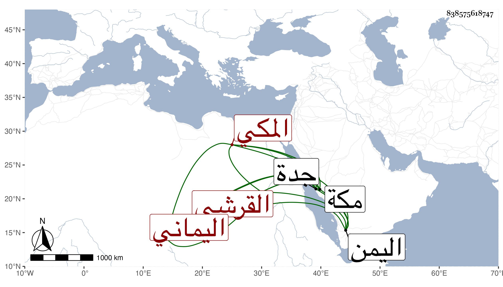

0902Sakhawi.DawLamic.ITO20230111-ara1.EIS1600.838575618747
Biography ID: 838575618747
441
عبد الرحيم بن أحمد بن أبي بكر بن عبد الله بن ظهيرة بن أحمد بن عطية بن ظهيرة القرشي اليماني ثم المكي . ولد باليمن سنة أربع وثلاثين وثمانمائة ونشأ به ثم قدم مكة مع أبيه فسمع أبا الفتح المراغي ، وأجاز له جماعة واشتغل بالفقه عند البرهان بن ظهيرة وأبي البركات الهيثمي ، ولازم المحب بن أبي السعادات فلما ولي الثانية استنا به بجدة . مات بمكة في رمضان سنة اثنتين وثمانين .
